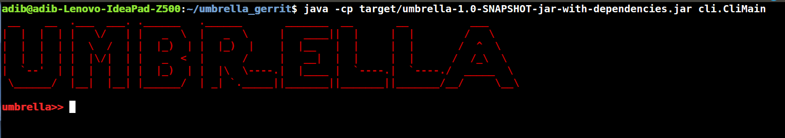

Umbrella User Interfaces¶
We provide a short descritpion Umbrella user interfaces as follows:
Umbrella Command Line Interface¶
We equipped Umbrella to a command line interface that can be executed as follows:
$ java -cp target/umbrella-1.0-SNAPSHOT-jar-with-dependencies.jar cli.CliMain
We illustrate Umbrella command line interface as follows:
Umbrella command line interface provides a set of commands that can be used for retrieving topology information such as list of hosts, links, and network devices, set logger options, etc. Current version of Umbrella supports the following commands:
- Hosts
- DESCRIPTION
- Displays list of the current hosts in the network topology.
- SYNTAX
- hosts
- ARGUMENTS
- NONE
- OPTIONS
- NONE
- Links
- DESCRIPTION
- Displays list of the current links in the network topology.
- SYNTAX
- links
- ARGUMENTS
- NONE
- OPTIONS
- NONE
- Devices
- DESCRIPTION
- Displays list of the current network devices in the network topology.
- SYNTAX
- devices
- ARGUMENTS
- NONE
- OPTIONS
- NONE
- Topo
- DESCRIPTION
- Displays all topology information such as list of hosts, links, and network devices.
- SYNTAX
- topo
- ARGUMENTS
- NONE
- OPTIONS
- NONE
- Setlog
- DESCRIPTION
- Sets java log4j logger level (e.g. DEBUG, INFO, WARN, …)
- SYNTAX
- setlog
- ARGUMENTS
- NONE
- OPTIONS
- -l –level
- set log level
How to add new commands?¶
To add a new command, we need to define a java class under cli package which implements a Runnable as follows:
@CommandLine.Command(name = "commandName", header = "%n@|color Command Description|@")
class newCommand implements Runnable {
// Command Line options and arguments (For more information, please refer to http://picocli.info/)
public void run() {
// Logic behind the new command.
}
}